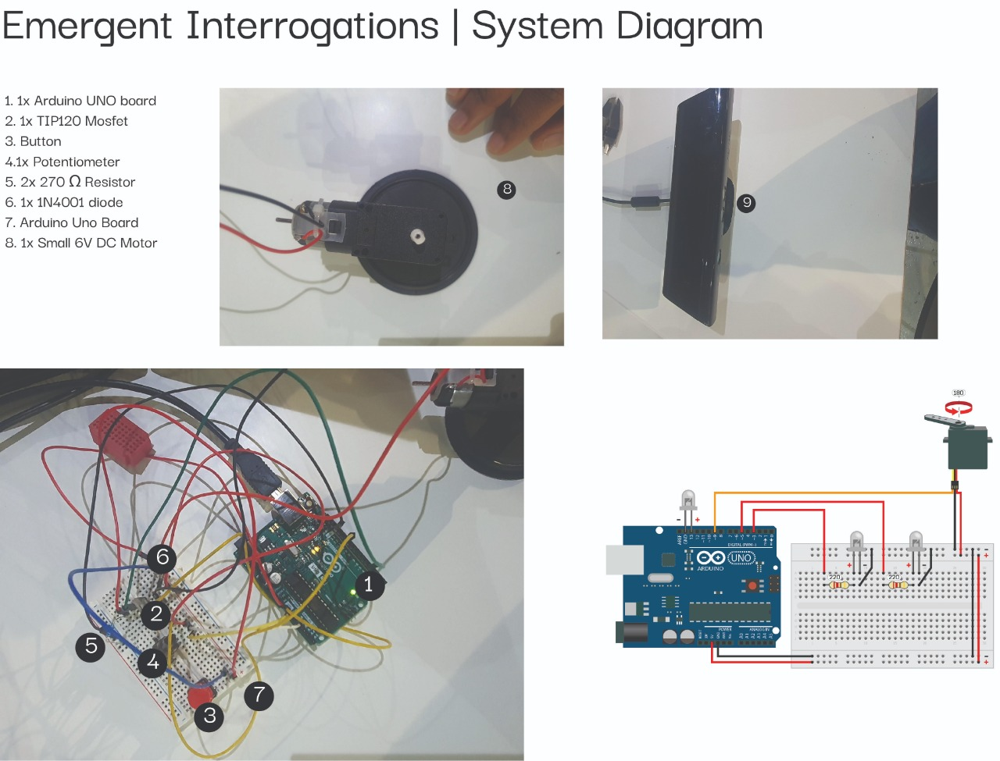

fabacademy challenges
Monthly Micro Challenges
Another Fabacademy challenge! I teamed up with Chris, Juaco and Busi to work on this month's challenge. We had to design something to exhibit or help us at Design Dialogues, using the skills we acquired over the past few weeks .
The full documentation of the project can be found on our repository. On this page, I will summarize the process, focusing on my perspective.
We decided to collaborate on this project in order to incorporate human bodies with technology in a provocative, speculative way. Our individual design research areas vary as follows: Joaquin is interested in body cognition, data interpretation and human-tech relationships. Tatiana explores activism, art, technology, science, and the environment. Chris explores intelligence in technological artifacts and co-design with algorithms, while Busisiwe looks into the junctions between the digital and physical navigating decentralization infrastructures and self organization.
In combining and navigating our interests, we saw intersections in all of these topics, mainly themes of immersive and interactiveness, explorative education, engaging experiences and provocative products. More specifically to me, I was happy to explore new programs to be able to create interactive installations, something that I have been passionate about for a long time.
After understanding our collective themes, we asked ourselves: how can we create an artifact that collects and presents data, using movement to answer provocative questions centered around MDEF journey and our collective consciousness?
We wanted to find a way of summarizing the topics we discussed and learned about in this second term at MDEF and find a way of generating responses from people who are outside of MDEF, during Design Dialogues. You can find the full explanation, diagrams and questions on the repository.

We approached the challenge in a very exporative and experimental way, especially in the first few days. We each wanted to work with something that was unfamiliar to us, but that we wanted to learn. Busi and I had no experience with using Grasshopper, but we were eager to use it regardless, so we spent a lot of time trying to understand the program.
We learned how to onnect the Kinect to retrieve data and convert it into values that could control the movement of a servo. Then we also played around with Arduino, making motors, buttons and servos work together.
It was nice to have the creative freedom to explore, but ultimately it did take more time than it would have if we delegated the tasks to people who knew more about Grasshopper / Firefly / Arduino. During these challenges, it's hard to go out of your comfort zone and explore things you're curious about without being worried about time constraints. This fine balance between pushing yourself by learning versus sticking to your fortés is hard to achieve.
Another thing I learned was that the gap between our prototype and final output was much larger than expected. On Wednesday, we had a fully functioning cardboard prototype, which got us excited and ready to move onto the final artifact. However, we soon found out that just because we made a prototype didn't mean that we were going to follow the same steps. We encountered lots of problems:
The servo needer to be stronger to be able to move a heavier object, we needed to 3D model and print joints for the motor and lever, we had to recalibrate the motor and rework on our Kinect project. The gap between our prototype and final outcome was very big, and in addition to that we had some difficulties combining the seperate Grasshopper files into one, which meant that we couldn't finish everything in time.
My main contributions to this project was: understanding Kinect + Grasshopper, debugging problems with Arduino, documenting the process, writing the reflections and finalising the github repository by using markdown. None of us had fixed roles because we often helped each other out when encountering problems and
I do believe that I could have contributed more if this challenge had not taken place in this specific moment in time. Both Chris and I were preparing and hosting Design Interventions, and all of us were equally worried about finishing up other projects before Design Dialogues. This created a stressful atmosphere not only in our group but also in the whole class, and there were many days where we would start working at 10AM and finish at 8PM.
We still need to complete the final output, but I think that by making a few final tweaks on Monday, everything should work as planned.